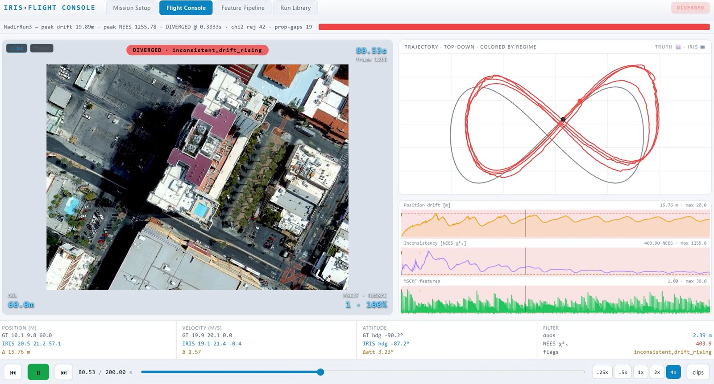
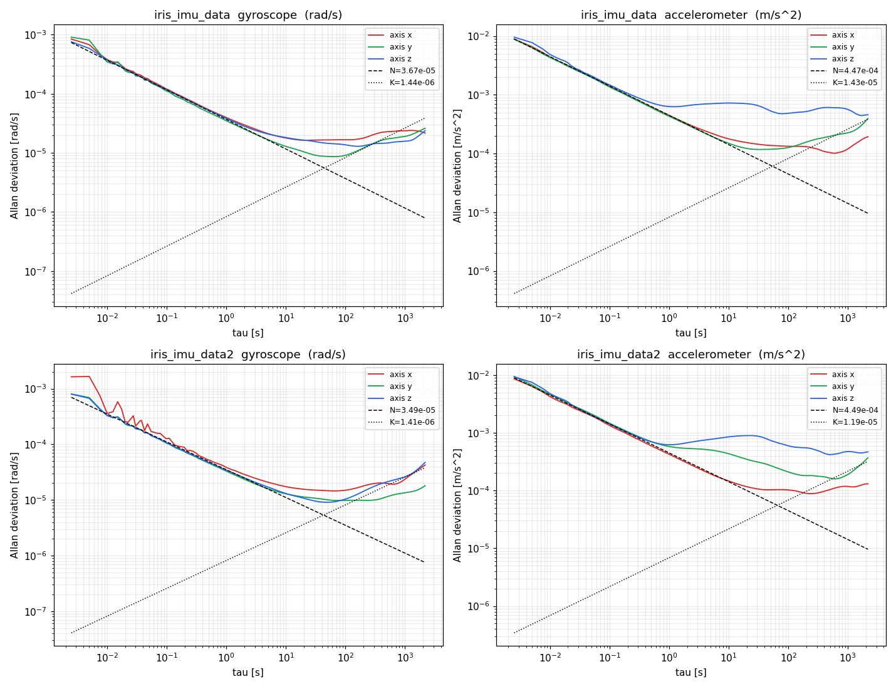
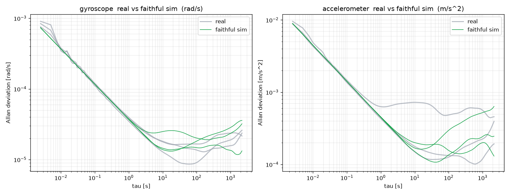
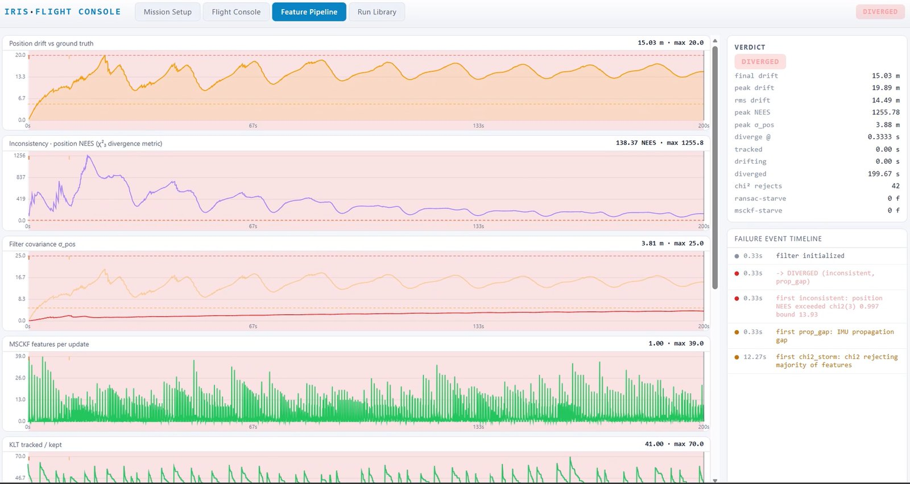
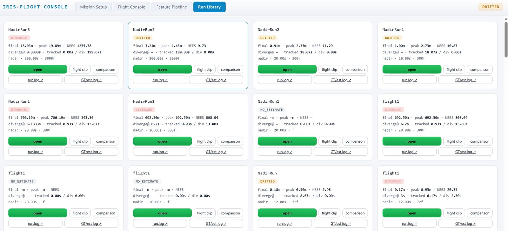

Project · LAT Aerospace
Navigation work at LAT Aerospace, 2026.

IRIS is a visual–inertial navigation system for flight without GNSS. I built the simulation and characterisation instrument used to test it end to end:
Results: 0.12–0.2 m drift on the 60 m canary trajectory and sub-metre error on photoreal imagery.
A simulated run is only evidence if the simulated sensors behave like the real ones. The synthetic IMU is matched to the measured overlapping Allan deviation of both flight inertial units from a three-hour stationary recording, then checked in a round trip: the synthetic stream is characterised exactly as the hardware was, and must land back on the measured curves.


Every run is graded blind against truth. Drift, the normalised estimation error squared (NEES) and the filter’s own reported uncertainty are tracked together, so a run that looks accurate but is overconfident still fails. The run library turns this into a regression gate for every change to the estimator.


Working from the filter internals (MSCKF nullspace projection and a sliding-window InEKF on a composite SEk(3) state), I derived a square-root (√VINS / SR-ISWF) backend formulation and identified its exact integration point in OpenVINS. To benchmark it against the baseline, I designed a low-cost visual–inertial rig: a webcam, an ICM-42688-P IMU and ESP32 hardware timestamping.